p5.js Basics
Documenting early research and Yayoi Kusama p5.js study
Documenting early research and Yayoi Kusama p5.js study
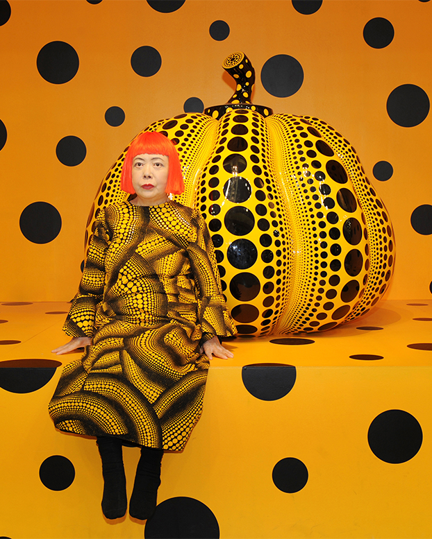
One of the first things I learnt while using p5.js was how to set up the canvas; defining its parameters, calling the Draw() function, and drawing a simple shape such as a circle or square.
P5js.org. (2025). circle. [online] Available at: https://p5js.org/reference/p5/circle/
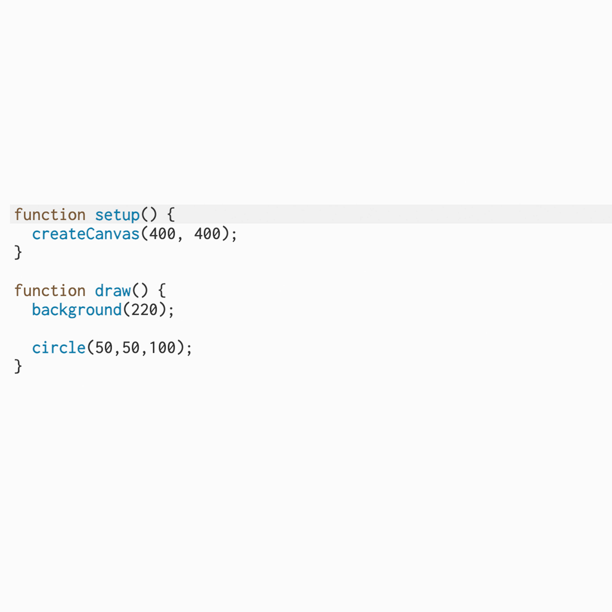
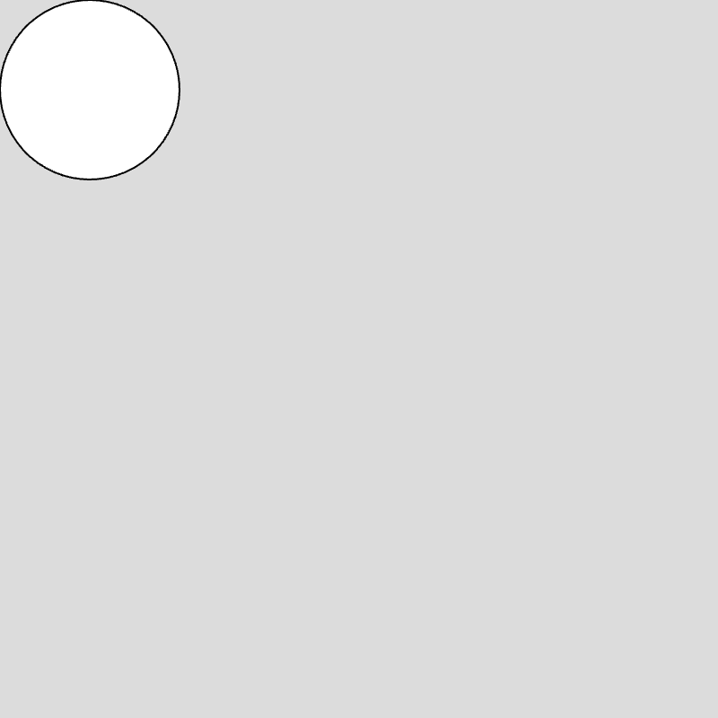
Let is used to define a value and is needed when created loops. A While loop is a method of repeating a statement while a condition remains true. Every time an action is re-initiated, the loop checks back to the conditional statement and if conditions are met, it will action the directions it has been given, if not, it will move on.
On the other hand, For loops are a method of repeating a statement for a specific number of iterations. Below is an example of a simple While and For loop which both yield the same result:
P5js.org. (2026). while. [online] Available at: https://p5js.org/reference/p5/while/
P5js.org. (2024). for. [online] Available at: https://p5js.org/reference/p5/for/
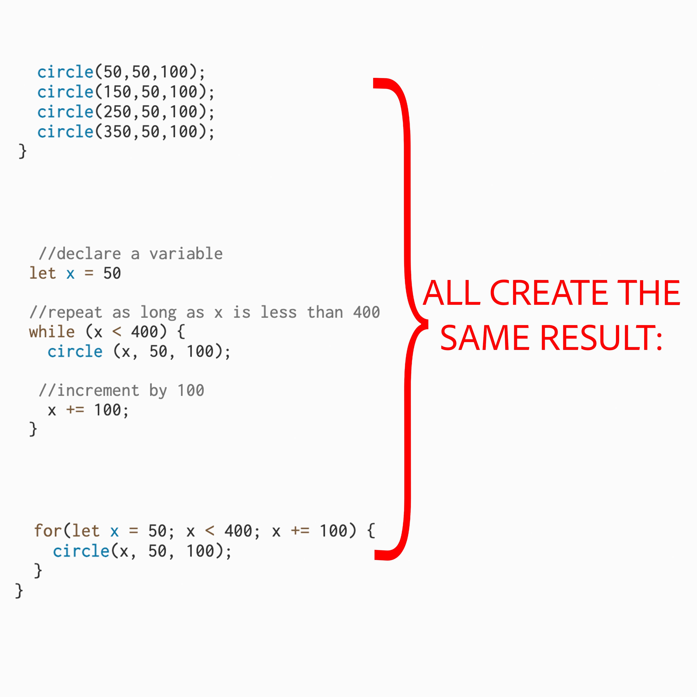
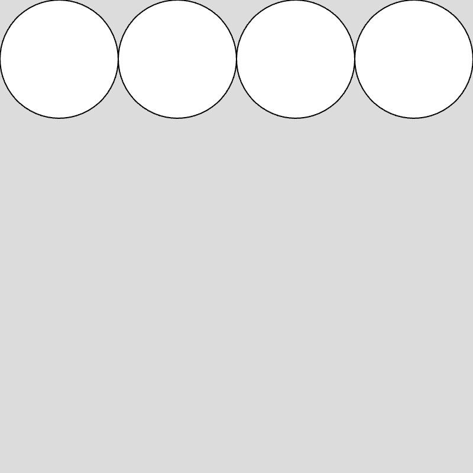
This technique introduces a 2nd variable for instance, the Y coordinate as well as X. This is needed to plot drawings on a vertical and horizontal axis.
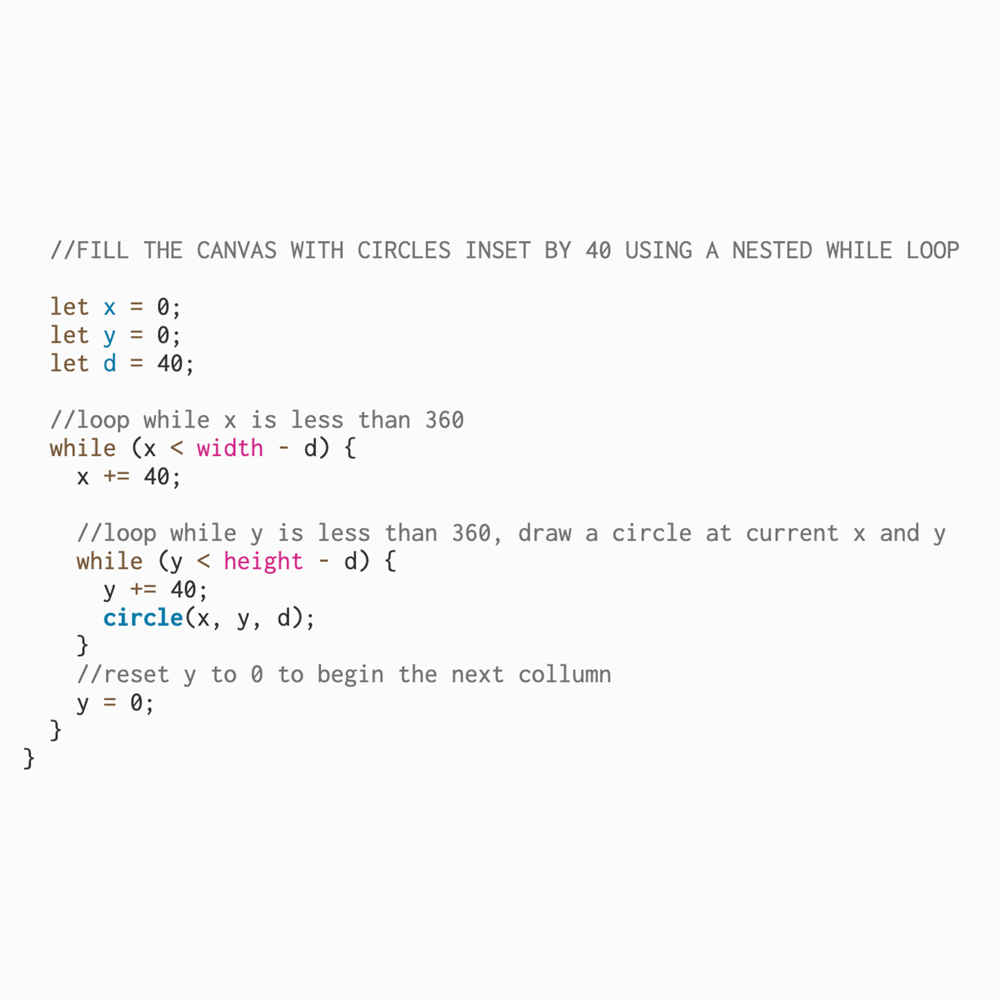
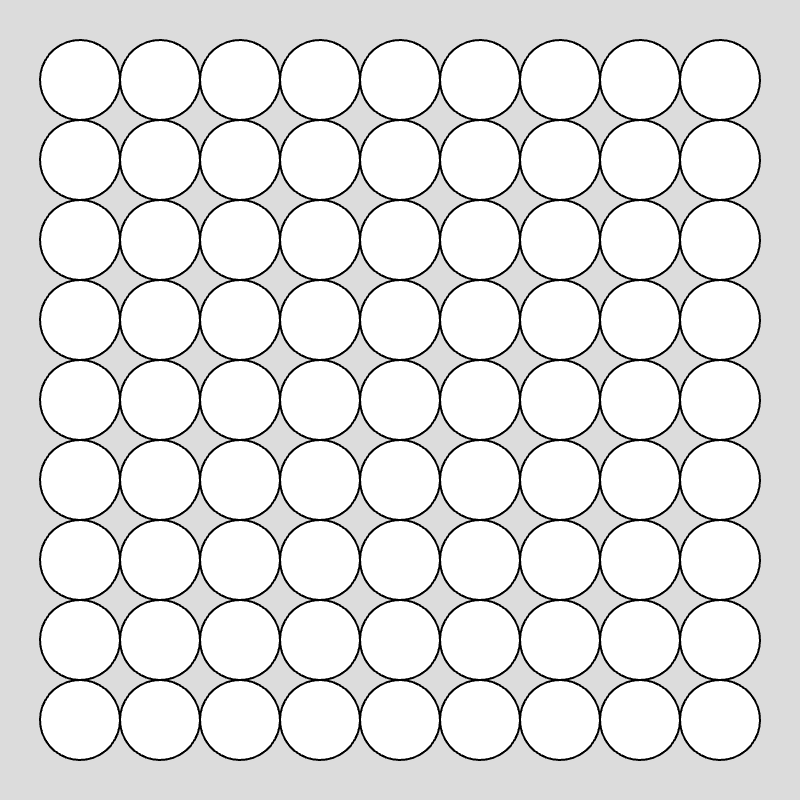
Push begins its own drawing group that contains its own styles and transformations and pop ends the drawing group, limiting the effect of all transformations to a specific group. Within the following example I also experiment with translate(), a function that shifts everything that comes after to a new X and Y coordinate:
P5js.org. (2024). push. [online] Available at: https://p5js.org/reference/p5/push/
P5js.org. (2025). pop. [online] Available at: https://p5js.org/reference/p5/pop/
P5js.org. (2024). Translate. [online] Available at: https://p5js.org/examples/transformation-translate/
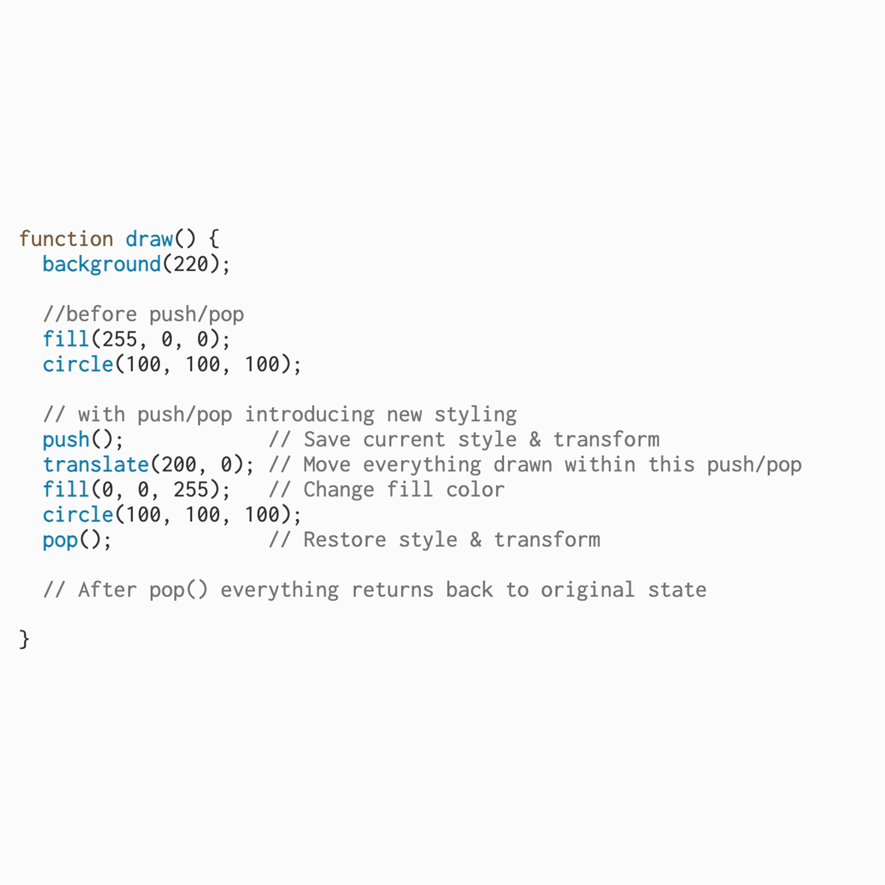
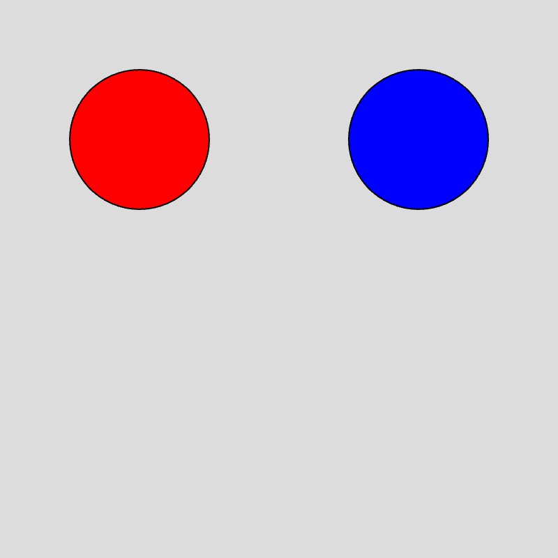
In class we created a looping function which fills the canvas with 50x50px squares. In addition to this, we introduced the ‘random’ attribute with the let ‘chosenColour’. This enabled us to input a range of colours which would be chosen at random to ‘fill’ each square. The noLoop() attribute is added to the setup function so that the act of choosing a random colour only happens once.
P5js.org. (2024). Random. [online] Available at: https://p5js.org/examples/calculating-values-random/
P5js.org. (2026). noLoop. [online] Available at: https://p5js.org/reference/p5/noLoop/
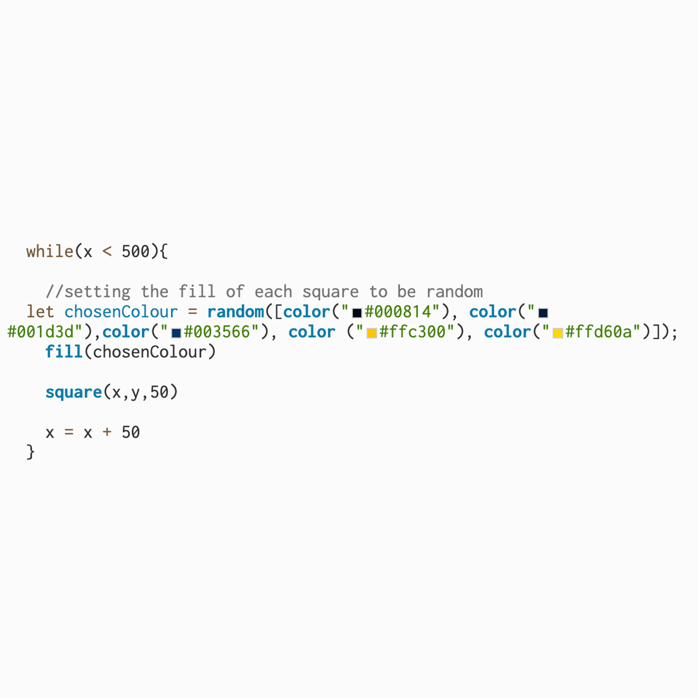
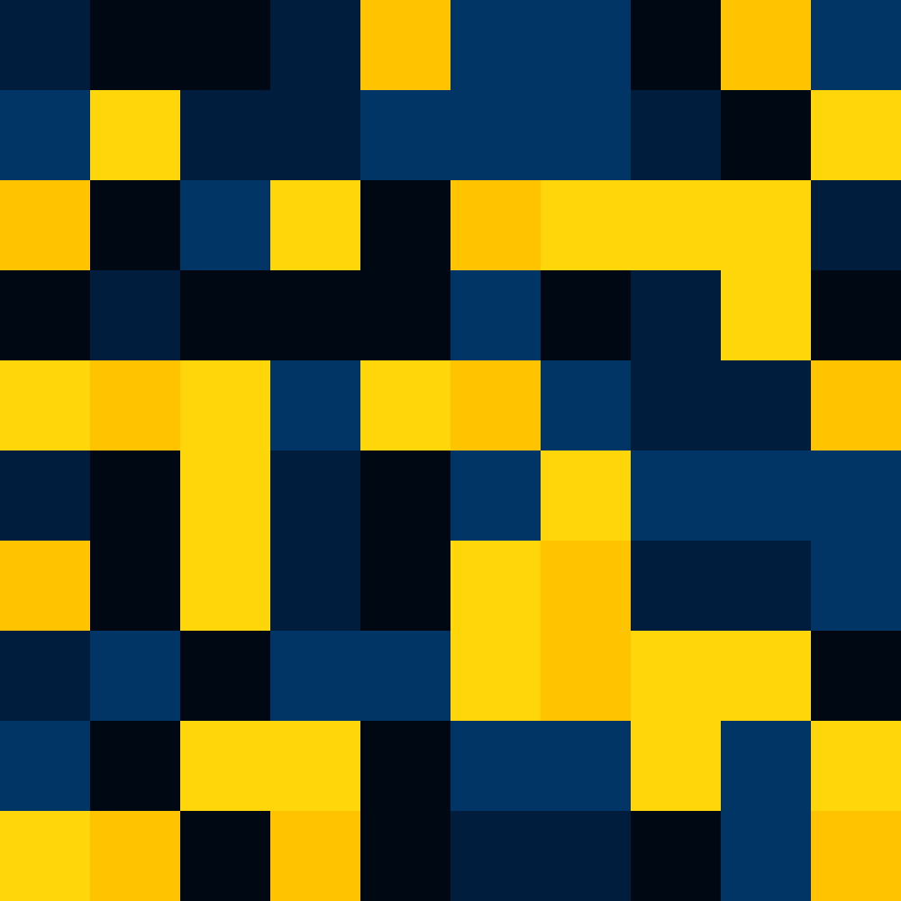
My research for this project, alongside the Piet Mondrian-inspired generative artwork created in class, led me to become more interested in recreating analogue art through p5.js.
Using the techniques explored so far, and inspired by all the circles, I created a Yayoi Kusama-inspired algorithmic artwork. The work uses a nested While loop to fill the canvas with circles. Within the nested loop, I implemented a Push()/Pop() structure containing a Translate() function with the random attribute. This introduces small positional offsets to each new drawing reference point; creating a more organic composition where the circles are imperfectly spaced rather than arranged in a rigid grid.
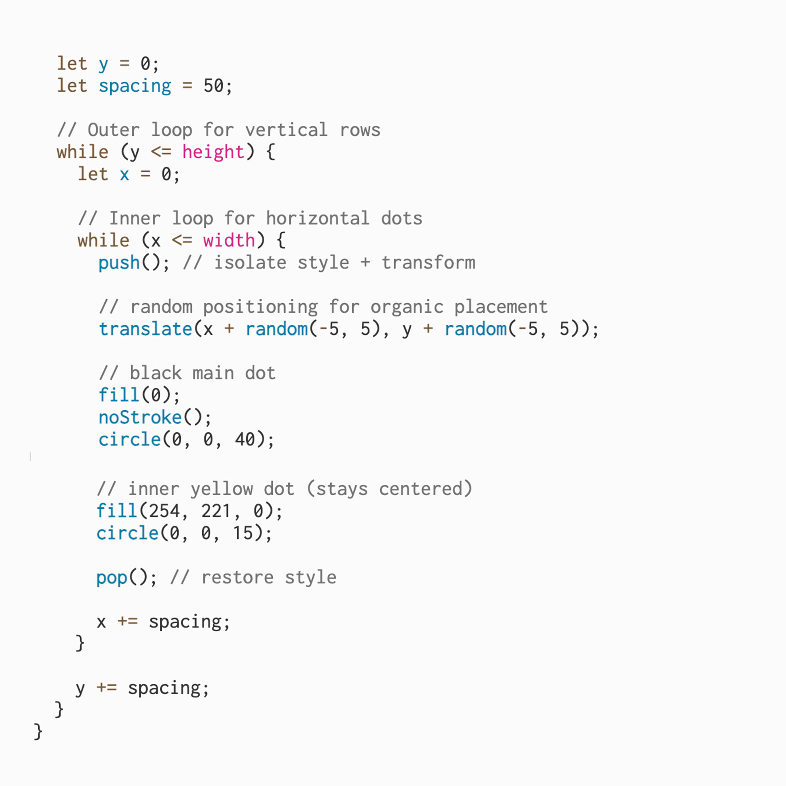